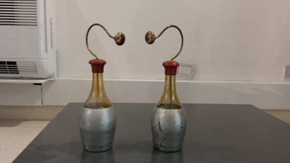

Bottiglia di Leyda
Scuola di provenienza: Liceo Statale "P. E. Imbriani", Avellino
Settore: Elettricità
Costruttori: Sconosciuto
Materiali: Non specificato
Accessori: Scaricatore elettrico
Stato di conservazione: Buono
Descrizione: La bottiglia di Leyda costituisce la forma più antica di condensatore elettrico.Si carica mettendo l´armatura esterna in comunicazione con il suolo e avvicinando l´interna alla sorgente dell´elettricità, che di solito è una macchina elettrostatica. La scarica può farsi in due modi:
- istantaneamente, riunendo le due armature con l´arco scaricatore rigido. Si tocca leggermente l´armatura esterna con una sferetta dello scaricatore e si accosta l´altra sferetta all´armatura, ottenendo così una forte scintilla;
- lentamente, isolando il condensatore, col posarlo su una lastra di vetro, e toccando alternativamente con la nocca del dito le due armature.